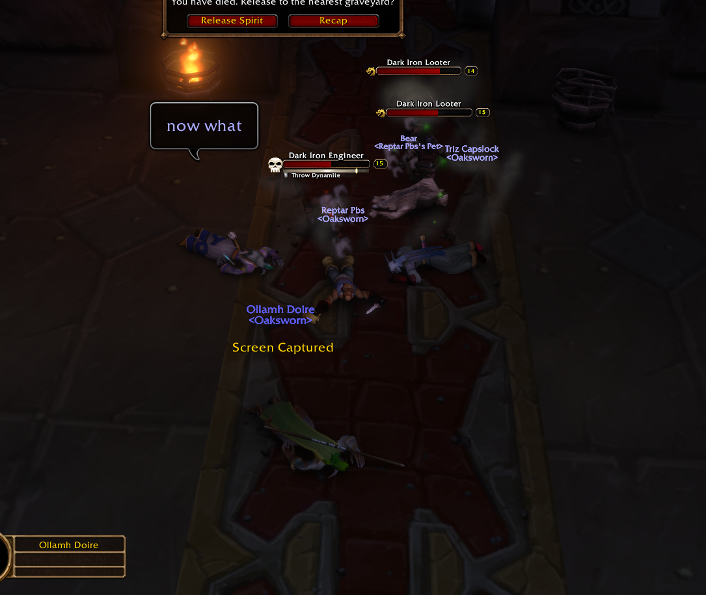

About
The Oath
Ranks and Divisions
Seasonal 'Coppicing'
Our History
From the Archives
From the Archives
Screenshots
Battles, ambushes, and good company, gathered from across the years.

Testing the explosives after a successful Hall of Thanes run. 2026-11-24.
‹
›